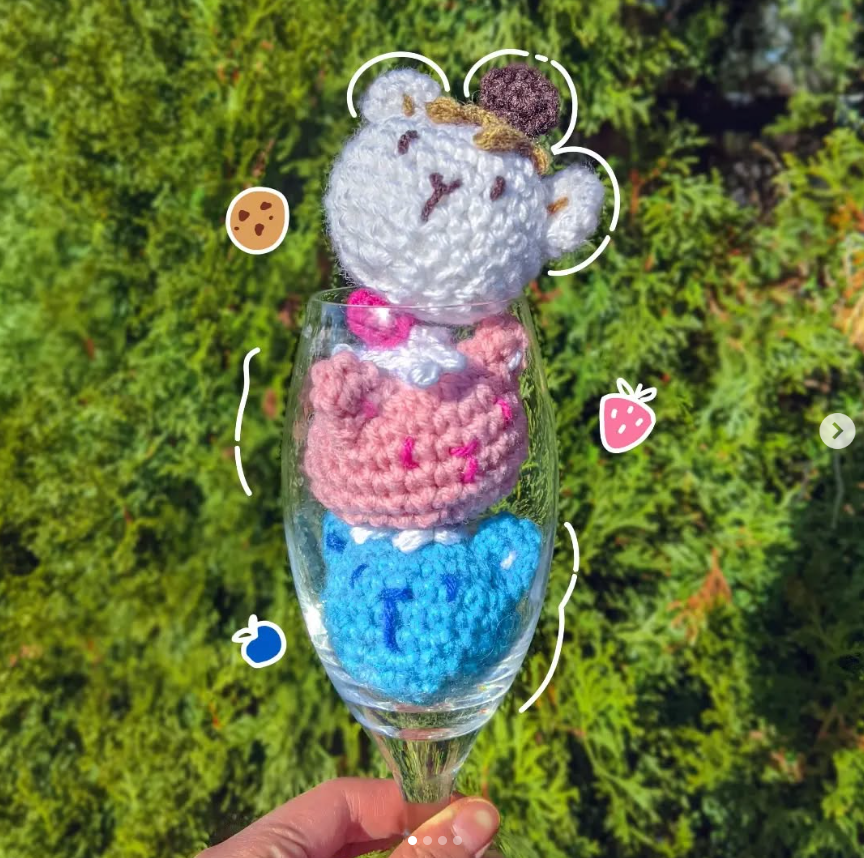

Home
Sundae Bears Recipe

Description
This pattern describes how to crochet a cute sundae bear.
(Pattern by me!)
Abbreviations
- sc = single crochet
- mr = magic ring
- inc = increase
- dec = decrease
- bo = bobble stitch
- ch = chain
- sl st = slip stitch
Instructions
Bear
- sc 6 in mr
- inc x6 (12)
- [sc, inc] x6 (18)
- [sc, bo, inc, sc 2, inc, sc 2, inc] x2 (24)
- sc around (24)
- sc around (24)
- sc around (24)
- sc around (24)
- [sc 2, dec] x6 (18)
- [sc, dec] x6 (12)
stuff.
- dec x6 (6)
FO and weave in ends.
Icing
- sc6 in mr (6)
- inc x6 (12)
- [sl st, ch 5, turn, (in second ch from hook) sl st in ch 4,
sl st, ch 6, turn, (in second ch from hook) sl st in ch 5,
sl st, ch 4, turn, (in second ch from hook) sl st in ch 3,
sl st 3] x2
FO, leaving a long tail for sewing.